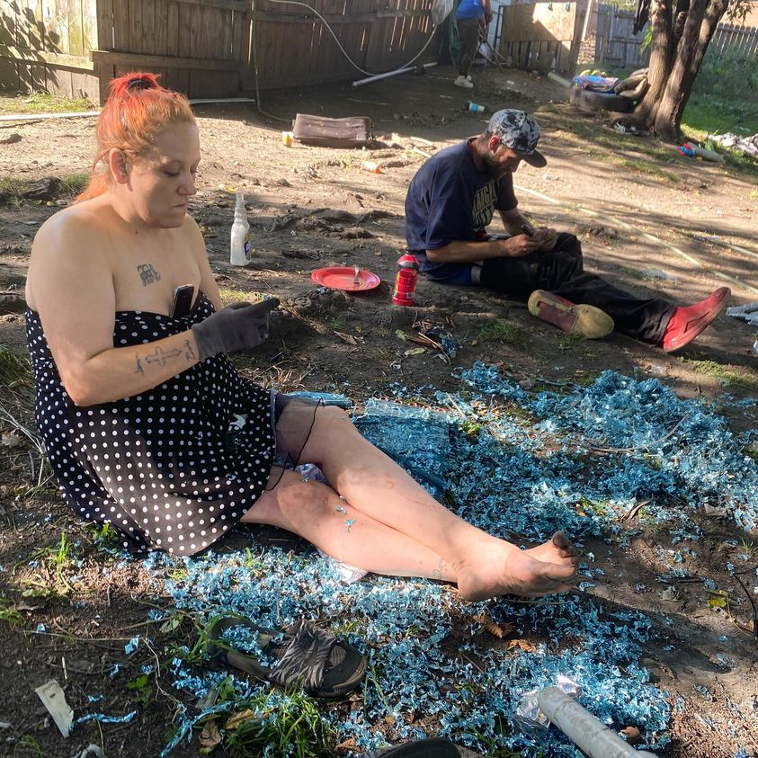

Timeline photos
This is Kristen surrounded by the aluminum shavings she is cutting off of a radiator she found. She will make more money taking the metal off of the radiator like this versus just bringing the entire radiator to the scrap yard.
Scrapping is the go to work for many homeless people. And women are top notch scrappers.